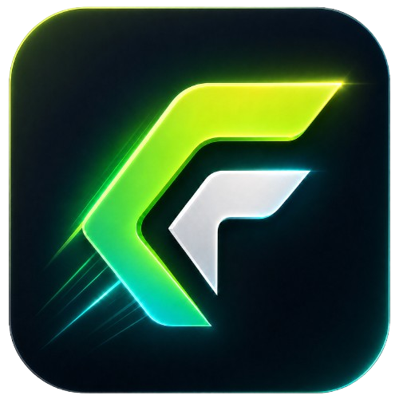

不存在的路径 / 不存在的 API / 绕过工程规范

不是聊天式代码助手，是规划、执行、验证、修复的一套工程流。
让 AI 动手前，先把项目规则变成硬约束。
tech_stack
React / TypeScript / Vite
LOCK
module_boundaries
组件、Hooks、工具函数边界
LOCK
protected_files
关键配置需要显式确认
LOCK
quality_gates
lint / typecheck / test
LOCK
不靠猜，所有关键动作都走可检查工具。
不是说完成就完成，验证结果必须过线。